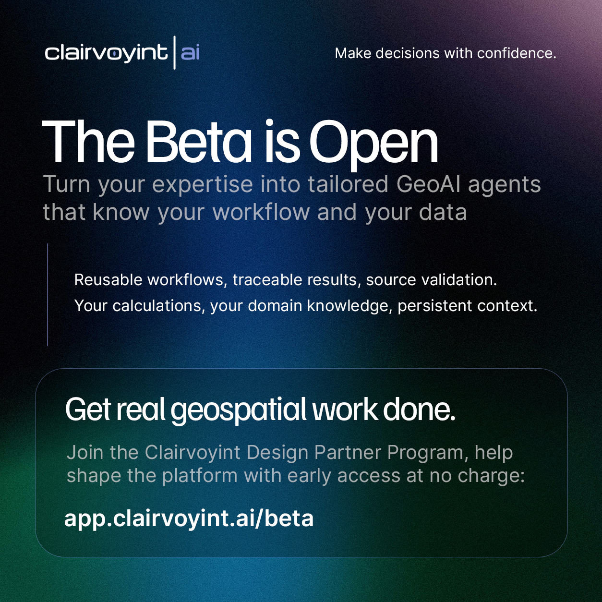

You don’t need to stuff your GIS desktop into a chat session.
You need to get real geospatial work done.
Clairvoyint is GeoAI for geospatial experts.
Clairvoyint helps you bring AI into the way your team already solves geospatial problems, using your data, your methodology, your spatial logic, your calculations, and your domain knowledge. It puts your problem at the center, rather than the tooling.
You can turn your approach into reusable, tailored agents for recurring questions, apply them across new locations and datasets, and keep the assumptions, evidence, and analytical path visible as the work changes.
Source validation, provenance, auditability, and persistent context are built into the platform. So are lower variance between runs, lower token usage, and the ability to choose the model that fits the task. Together, they give you a more disciplined way to use AI and make decisions with confidence.
Clairvoyint gives geospatial experts a better way to put AI to work.
We’re opening the Clairvoyint Design Partner Beta to geospatial professionals and organizations with real problems to solve.
Apply to join: app.clairvoyint.ai/beta
Design Partner Agreement required. Participation includes feedback and collaboration with the Clairvoyint team.